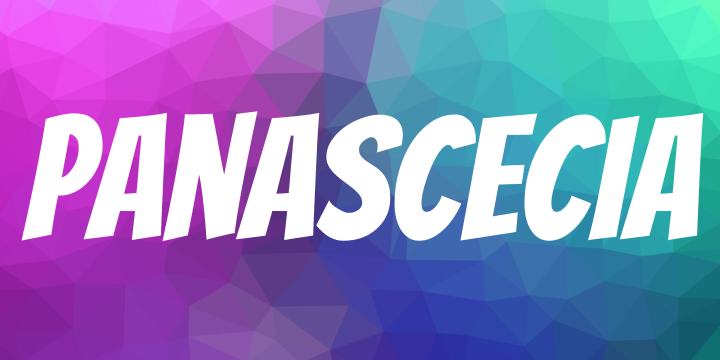

Bienvenue Sur la page des Actualités
Actualité | Le site web de rgg2.0 a été crée | postéé le 28/11/2020
Actualité | Vous pouvez Maintenant Télécharger mes datapack pour minecraft via le bouton Datapacks sur la page d'acceuil
Patchnote 1.1 :
- Les menu sont plus intéractifs
- Update des visuels
- Update Mineure de la page d'actualité
- Nouveaux Menus : PanAscecia ; Mes Datapacks